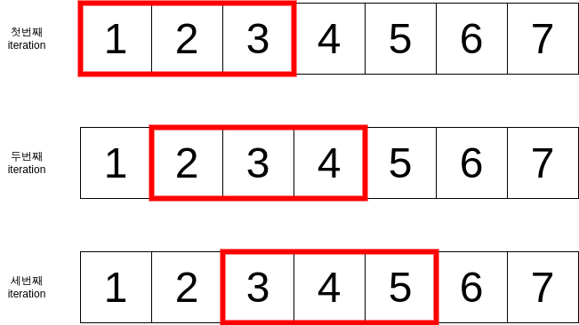

슬라이딩 윈도우 알고리즘
배열이 주어졌을 때 1개가 아닌 여러 개의 원소를 확인하며 휩쓸고 지나가는 테크닉을 슬라이딩 윈도우 (sliding window)라고 부른다. 매 iteration마다 확인 대상이 되는 원소들에 사각형 표시를 해보면 마치 창이 움직이는 것 같은 모양을 볼 수 있다.

슬라이딩 윈도우의 "창 크기"는 고정될 수도 있고 (fixed-size), 가변적일 수도 있다 (variable-size). 아무런 언급이 없으면 고정 크기인 경우가 많고, 가변 크기인 경우에는 아예 슬라이딩 윈도우라 부르지 않고 투 포인터 알고리즘으로 분류하기도 한다.
슬라이딩 윈도우는 연속된 범위가 답인 경우의 탐색에 자주 사용된다. 보통 특정 조건을 만족하면서 목표값을 최대 (또는 최소)로 하는 범위를 찾을 때 사용된다. 예를 들어 다음을 생각해볼 수 있다.
- 값의 상한이 존재할 때, 연속된 구간의 원소 합 중 가장 큰 것은?
- 주어진 문자열의 모든 문자를 포함하는 가장 작은 창의 크기는?
슬라이딩 윈도우로 문제를 풀 때는 보통 다음과 같은 순서로 푼다.
- 조건을 만족하는 가장 큰 (또는 가장 작은) 창으로 초기화한다.
- 조건을 유지하면서 창의 시작과 끝을 한 쪽 방향으로 움직이며 창을 신축 (또는 신장)한다.
- 창이 배열의 끝에 도달할 때까지 확인한 값 중 최선의 값을 선택한다.
슬라이딩 윈도우 알고리즘의 올바름 증명은 답의 존재성부터 시작하면 편하게 할 수 있다. 답이 되는 배열 범위가 존재함을 보이고, 창이 처음부터 끝까지 쓸고 갈 때 해당 배열 범위를 거쳐서 지나갈 수 밖에 없음을 보이면 된다.